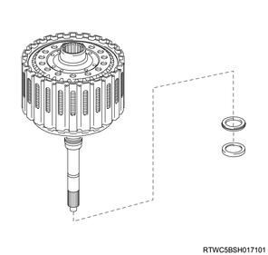

Forward clutch assembly disassembly (TB-50LS)
1. Reverse clutch hub sub-assembly removal
1. Remove the hole snap ring from the reverse clutch piston sub-assembly using the driver.
2. Remove the reverse clutch hub sub-assembly from the reverse clutch piston sub-assembly.
2. Clutch disc No.3 removal
1. Remove the clutch disc No.3 from the reverse clutch hub sub-assembly.
Note
- Remove the sleeve, cushion plate, flange, 5 discs and 4 plates from the reverse clutch hub sub-assembly.

3. Direct clutch hub sub-assembly removal
1. Remove the thrust needle roller bearing from the direct clutch hub sub-assembly.
2. Remove the direct clutch hub sub-assembly from the reverse clutch piston sub-assembly.

Note
- Remove the thrust needle roller bearing and the thrust bearing race No.2 from the direct clutch hub sub-assembly.
4. Forward clutch assembly removal
1. Remove the forward clutch assembly from the reverse clutch drum sub-assembly.
Note
- Remove the thrust needle roller bearing and the thrust bearing race from the input shaft sub-assembly.

5. Reverse clutch flange removal
1. Remove the reverse clutch flange from the reverse clutch piston sub-assembly.
6. Forward clutch hub removal
1. Remove the forward clutch hub from the input shaft sub-assembly.
Note
- Remove the thrust bearing race and the thrust needle roller bearing from the input shaft sub-assembly.
7. Clutch disc No.1 removal
1. Remove the hole snap ring from the input shaft sub-assembly using the driver.
2. Remove the clutch disc No.1 from the input shaft sub-assembly.
Note
- 4JJ1
- Remove the 2 flanges, 7 discs and 6 plates from the input shaft sub-assembly.
Note
- 4JK1
- Remove the 2 flanges, 6 discs and 5 plates from the input shaft sub-assembly.
8. Forward clutch return spring sub-assembly removal
1. Remove the forward clutch return spring sub-assembly from the input shaft sub-assembly.
Note
- Place spring compressor on the clutch balancer No.1 and compress the forward clutch return spring sub-assembly with a press.
SST: 5-8840-2970-0 - spring compressor
Note
- Using snap ring pliers, remove the shaft snap ring.
Caution
- Be careful not to expand the shaft snap ring too much.
- Spring compressor
Note
- Remove the clutch balancer No.1 and the forward clutch return spring sub-assembly from the input shaft sub-assembly.

9. Forward clutch piston removal
1. Remove the forward clutch piston from the input shaft sub-assembly.
Note
- Apply compressed air into the oil passage as shown in the figure and remove the forward clutch piston from the input shaft sub-assembly.
- When applying compressed air, shut one oil passage of the input shaft sub-assembly as shown in the figure.
Compressed air： 392 kPa { 4.0 kgf/cm2 / 57 psi }

Note
- Remove the 2 O-rings from the forward clutch piston.
| O-ring | |
| Inner diameter | Thickness |
| ： 108.06 mm { 4.2543 in } | ： 3.10 mm { 0.1220 in } |
| ： 39.50 mm { 1.5551 in } | ： 2.62 mm { 0.1031 in } |
Note
- Remove the O-ring from the clutch balancer No.1.
| O-ring | |
| Inner diameter | Thickness |
| ： 107.40 mm { 4.2283 in } | ： 2.62 mm { 0.1031 in } |
Note
- Remove the 3 seal rings from the input shaft sub-assembly.
| Seal ring | |
| Inner diameter | Thickness |
| ： 28.97 mm { 1.1405 in } | ： 2.30 mm { 0.0906 in } |
10. Hole snap ring removal
1. Remove the hole snap ring from the reverse clutch drum sub-assembly using the driver.
11. Clutch disc No.2 removal
1. Remove the hole snap ring from the reverse clutch drum sub-assembly using the driver.
2. Remove the clutch disc No.2 from the reverse clutch drum sub-assembly.
Note
- 4JJ1
- Remove the flange, 6 discs and 6 plates from the reverse clutch drum sub-assembly.
- Flange
- Disc, 6pcs.
- Plate, 6pcs.
Note
- 4JK1
- Remove the flange, 5 discs and 5 plates from the reverse clutch drum sub-assembly.

- Flange
- Disc, 5 pcs.
- Plate, 5 pcs.
12. Direct clutch return spring sub-assembly removal
1. Remove the direct clutch return spring sub-assembly from the reverse clutch drum sub-assembly.
Note
- Place spring compressor on the clutch balancer No.2 and compress the direct clutch return spring sub-assembly.
SST: 5-8840-2972-0 - spring compressor
Note
- Using snap ring pliers, remove the shaft snap ring.
Caution
- Be careful not to expand the hole snap ring too much.

- Snap ring pliers
- Spring compressor
Note
- Remove the clutch balancer No.2 and the direct clutch return spring sub-assembly from the reverse clutch drum sub-assembly.
13. Direct clutch piston removal
1. Remove the direct clutch piston from the reverse clutch drum sub-assembly.
Note
- Apply compressed air into the oil passage as shown in the figure and remove the direct clutch piston from the reverse clutch drum sub-assembly.
- When applying compressed air, shut one oil passage of the reverse clutch drum sub-assembly as shown in the figure.
Compressed air： 392 kPa { 4.0 kgf/cm2 / 57 psi }
Note
- Remove the 2 O-rings from the direct clutch piston.
| O-ring | |
| Inner diameter | Thickness |
| ： 126.70 mm { 4.9882 in } | ： 3.10 mm { 0.1220 in } |
| ： 74.70 mm { 2.9409 in } | ： 2.62 mm { 0.1031 in } |
14. Reverse clutch piston sub-assembly removal
1. Remove the reverse clutch piston sub-assembly from the reverse clutch drum sub-assembly.
Note
- Place spring compressor on the clutch balancer No.3 and compress the reverse clutch return spring sub-assembly with a press.
SST: 5-8840-2971-0 - Spring compressor
Note
- Prepare an appropriate pedestal so that the reverse clutch drum sub-assembly is not lowered.

- Spring compressor
- Clutch balancer No. 3
- Snap ring
- Reverse clutch drum sub-assembly
- Pedestal
- 70 mm {2.76 in} or more
- φ65-160 mm ｛2.56-6.30 in｝
Note
- Using snap ring pliers, remove the shaft snap ring.
Caution
- Be careful not to expand the shaft snap ring too much.
- Spring compressor
- Snap ring pliers
Note
- Remove the clutch balancer No.3 and the reverse clutch return spring sub-assembly from the reverse clutch piston sub-assembly.

Note
- Remove the reverse clutch drum sub-assembly from the reverse clutch piston sub-assembly.
Note
- Remove the 2 O-rings from the reverse clutch piston sub-assembly.
| O-Ring | |
| Inner diameter | Thickness |
| ： 142.30 mm { 5.6024 in } | ： 3.10 mm { 0.1220 in } |
| ： 139.50 mm { 5.4921 in } | ： 3.10 mm { 0.1220 in } |

Note
- Remove the O-ring from the reverse clutch drum sub-assembly.
| O-Ring | |
| Inner diameter | Thickness |
| ： 100.80 mm { 3.9685 in } | ： 3.10 mm { 0.1220 in } |